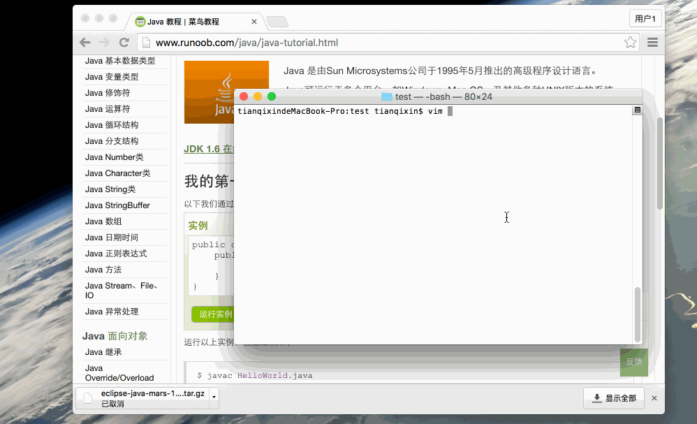
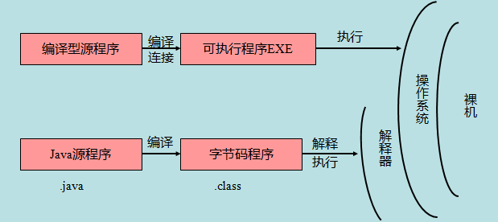

Java 基本構文
Java プログラムは、一連のオブジェクトの集合と考えることができます。これらのオブジェクトは、互いのメソッドを呼び出すことで連携して動作します。以下で、クラス、オブジェクト、メソッド、インスタンス変数の概念について簡単に説明します。
- オブジェクト: オブジェクトはクラスのインスタンスであり、状態と振る舞いを持ちます。例えば、犬はオブジェクトです。その状態には色、名前、品種などがあり、振る舞いには尻尾を振る、吠える、食べるなどがあります。
- 类: クラスはテンプレートであり、ある種類のオブジェクトの振る舞いと状態を記述します。
- メソッド: メソッドは振る舞いです。クラスは多くのメソッドを持つことができます。論理演算、データ変更、およびすべての動作はメソッド内で実行されます。
- インスタンス変数: 各オブジェクトは固有のインスタンス変数を持ち、オブジェクトの状態はこれらのインスタンス変数の値によって決まります。
最初のJavaプログラム
次に、文字列を出力する簡単な Java プログラムを見てみましょう。Hello World
例
サンプルを実行 »

以下で、このプログラムを保存、コンパイル、実行する方法を段階的に説明します。
- コードエディタを開き、上記のコードを追加します。
- ファイル名を HelloWorld.java として保存します。
- cmd コマンドウィンドウを開き、対象ファイルがある場所（例: C:\）に移動します。
- コマンドラインウィンドウで次のように入力します。javac HelloWorld.javaEnter キーを押してコードをコンパイルします。コードにエラーがなければ、cmd のコマンドプロンプトは次の行に移動します（環境変数がすべて設定されていると仮定します）。
- 次に次のように入力します。java HelloWorldEnter キーを押すとプログラムが実行されます。
ウィンドウに Hello World が表示されます。
$ javac HelloWorld.java $ java HelloWorld Hello World
エンコーディングの問題が発生した場合は、次のものを使うことができます。-encodingオプション設定utf-8を指定してコンパイルします。
javac -encoding UTF-8 HelloWorld.java java HelloWorld
GIF 図によるデモ：

基本構文
Java プログラムを作成する際は、以下の点に注意してください。
- 大文字小文字の区別: Java は大文字と小文字を区別します。つまり、識別子 Hello と hello は異なるものを指します。
- クラス名: すべてのクラスにおいて、クラス名の先頭文字は大文字にする必要があります。クラス名が複数の単語で構成される場合は、各単語の先頭文字を大文字にします。例:MyFirstJavaClass 。
- メソッド名: すべてのメソッド名は小文字で始める必要があります。メソッド名に複数の単語が含まれる場合、後続の各単語の先頭文字は大文字にします。
- ソースファイル名: ソースファイル名はクラス名と同じでなければなりません。ファイルを保存するときは、クラス名をファイル名として使用してください（Java は大文字小文字を区別することに注意）。ファイル名の拡張子は.javaです。（ファイル名とクラス名が異なる場合はコンパイルエラーになります。）
- メインメソッドのエントリポイント: すべての Java プログラムはpublic static void main(String[] args)メソッドから実行を開始します。
Java 識別子
Java のすべての構成要素には名前が必要です。クラス名、変数名、メソッド名はすべて識別子と呼ばれます。
Java の識別子について、以下の点に注意する必要があります。
- すべての識別子は、英字（A-Z または a-z）、ドル記号（$）、またはアンダースコア（_）で始まる必要があります。
- 最初の文字の後には、英字（A-Z または a-z）、ドル記号（$）、アンダースコア（_）、または数字の任意の組み合わせを使用できます。
- キーワードは識別子として使用できません。
- 識別子は大文字と小文字を区別します。
- 有効な識別子の例: age、$salary、_value、__1_value
- 無効な識別子の例: 123abc、-salary
Java 修飾子
他の言語と同様に、Java では修飾子を使用してクラス内のメソッドやプロパティを修飾できます。主に 2 種類の修飾子があります。
- アクセス制御修飾子: default, public, protected, private
- 非アクセス制御修飾子: final, abstract, static, synchronized
後の章で Java 修飾子について詳しく説明します。
Java 変数
Java には主に次の種類の変数があります。- ローカル変数
- クラス変数（静的変数）
- メンバー変数（非静的変数）
Java 配列
配列はヒープ上に格納されるオブジェクトで、同じ型の複数の変数を保持できます。後の章で、配列の宣言、構築、初期化の方法を学びます。
Java 列挙型
Java 5.0 で列挙型が導入されました。列挙型は、変数を事前に設定された値のみに制限します。列挙型を使用するとコードのバグを減らせます。
例えば、ジュース店向けのプログラムを設計する場合、ジュースのサイズを小、中、大に制限します。つまり、顧客はこの 3 つのサイズ以外のジュースを注文できないことを意味します。
例
注意：列挙型は単独で宣言することも、クラス内で宣言することもできます。メソッド、変数、コンストラクタも列挙型内で定義できます。
Java キーワード
以下に Java のキーワードを示します。これらの予約語は、定数、変数、および識別子の名前には使用できません。
| カテゴリ | キーワード | 説明 |
|---|---|---|
| アクセス制御 | private | プライベート |
| protected | プロテクト | |
| public | パブリック | |
| default | デフォルト | |
| クラス、メソッド、変数の修飾子 | abstract | 抽象を宣言 |
| class | 类 | |
| extends | 拡張、継承 | |
| final | 最終値、変更不可 | |
| implements | 実装（インターフェース） | |
| interface | インターフェース | |
| native | ローカル、ネイティブメソッド（Java 以外での実装） | |
| new | 生成 | |
| static | 静的 | |
| strictfp | 厳密浮動小数点、正確な浮動小数点 | |
| synchronized | スレッド、同期 | |
| transient | 一時的 | |
| volatile | 揮発性 | |
| プログラム制御文 | break | ループを抜ける |
| case | switch で選択するための値を定義 | |
| continue | 続行 | |
| do | 実行 | |
| else | それ以外 | |
| for | ループ | |
| if | もし | |
| instanceof | インスタンス | |
| return | 戻る | |
| switch | 値に基づいて実行を選択 | |
| while | ループ | |
| エラーハンドリング | assert | 式が真であることをアサートする |
| catch | 例外を捕捉する | |
| finally | 例外の有無にかかわらず実行 | |
| throw | 例外オブジェクトをスローする | |
| throws | 例外がスローされる可能性があることを宣言する | |
| try | 例外を捕捉 | |
| パッケージ関連 | import | インポート |
| package | 包 | |
| 基本型 | boolean | ブール型 |
| byte | バイト型 | |
| char | 文字型 | |
| double | 倍精度浮動小数点 | |
| float | 単精度浮動小数点 | |
| int | 整数型 | |
| long | 長整数型 | |
| short | 短整数型 | |
| 変数参照 | super | 親クラス、スーパークラス |
| this | このクラス | |
| void | 戻り値なし | |
| 予約キーワード | goto | キーワードだが使用できない |
| const | キーワードだが使用できない |
注意：Java の null はキーワードではなく、true や false と同様にリテラル定数であり、識別子として使用することはできません。
Java コメント
C/C++ と同様に、Java も単行コメントと複数行コメントをサポートしています。
コメント内の文字は Java コンパイラによって無視されます。
詳細については、以下を参照してください：Java コメント。
Java 空行
空白行やコメントのある行は、Java コンパイラによって無視されます。
継承
Javaでは、クラスは他のクラスから派生することができます。作成したいクラスがあり、そのクラスが必要とする属性やメソッドをすでに持つクラスが存在する場合、新しく作成したクラスにそのクラスを継承させることができます。
継承を利用することで、既存のクラスのメソッドと属性を再利用でき、これらのコードを書き直す必要はありません。継承されるクラスをスーパークラス（super class）と呼び、派生クラスをサブクラス（sub class）と呼びます。
インターフェース
Javaでは、インターフェースはオブジェクト間で相互に通信するためのプロトコルと理解できます。インターフェースは継承において非常に重要な役割を果たします。
インターフェースは派生で使用するメソッドを定義するだけで、メソッドの具体的な実装は完全に派生クラスに依存します。
Java ソースプログラムとコンパイル型実行の違い
下図の通りです：

次の節では、Javaプログラミングにおけるクラスとオブジェクトを紹介します。その後、Javaのクラスとオブジェクトについてより明確に理解できるようになります。
その他の拡張
Android
297***4077@qq.com
識別子は、変数名、クラス名、クラス内のメソッド名、ファイル名などを識別するために使用できます。
命名規則：
キーワード：すべて小文字です。JDK1.2ではstrictfp（正確な浮動小数点型）キーワードが追加され、JDK1.4ではassert（アサーション）キーワードが追加され、JDK1.5ではenum（列挙型）キーワードが追加されました。
true、false、nullは厳密にはキーワードとすべきではなく、予約語と呼ぶ方が適切です。
習慣：
よく使われるエスケープ文字：
Android
297***4077@qq.com
amy
143***9399@qq.com
Javaの8つの基本型：（バイト数で分類）
boolean ブール型 1バイト 8bit（8ビット）
byte バイト型 1バイト
char 文字型 2バイト
short 短整数型 2バイト
int 整数型 4バイト
float 浮動小数点型（単精度）4バイト
long 長整数型 8バイト
double 倍精度型 8バイト
Javaでデフォルトの整数型はintです。longとして定義する場合は、数値の後にLまたはlを付ける必要があります。
デフォルトの浮動小数点型は倍精度浮動小数点数です。floatとして定義する場合は、数値の後にfまたはFを付ける必要があります。
1バイトは8ビットに等しく、1バイトは256個の数を表せます。2^8
英文字1文字または算用数字1桁は1バイトを占めます。
漢字1文字は2バイトを占めます。
amy
143***9399@qq.com
jinling
103***5512@qq.com
参考アドレス
一、命名規範
1、プロジェクト名はすべて小文字
2、パッケージ名はすべて小文字
3、クラス名の先頭文字は大文字、クラス名が複数の単語で構成される場合は各単語の先頭文字も大文字にします。例：public class MyFirstClass{}
4、変数名・メソッド名の先頭文字は小文字、名前が複数の単語で構成される場合は各単語の先頭文字を大文字にします。例：
int index=0; public void toString(){}5、定数名はすべて大文字
A例：
6、すべての命名規則は次の規則に従わなければなりません：
二、コメント規範
1、クラスコメント
各クラスの前にクラスコメントを付けなければなりません。コメントテンプレートは次の通りです：
2、属性コメント
各属性の前に属性コメントを付けなければなりません。コメントテンプレートは次の通りです：
3、メソッドコメント各メソッドの前にメソッドコメントを付けなければなりません。コメントテンプレートは次の通りです：
4、コンストラクタコメント
各コンストラクタの前にコメントを付けなければなりません。コメントテンプレートは次の通りです：
5、メソッド内部のコメント
メソッド内部では、単一行または複数行のコメントを使用します。このコメントは実際の状況に応じて追加します。
例：
jinling
103***5512@qq.com
参考アドレス
ycxchkj
xch***163.com
Javaプログラミング規範
packageの命名：package名はすべて小文字の英字で構成されます。例：com.runoob。
classとinterfaceの命名：classおよびinterfaceの名前は大文字で始まり、その他の文字は小文字の単語で構成されます。例：Person、RuntimeException。
class変数の命名：変数名は小文字で始まり、後続の単語は大文字で始めます。例：index、currentImage。
classメソッドの命名：メソッド名は小文字で始まり、後続の単語は大文字で始めます。例：run()、getBalance()。
static final変数の命名：static final変数の名前はすべて大文字で、完全な意味を表せるものにします。例：PI、PASSWORD。
パラメータの命名：パラメータ名は変数の命名規範と同じです。
配列の命名：配列は常に次のように命名する必要があります：byte[] buffer。
良いプログラミング習慣を身につけることは、一人前のプログラマーに必須の条件です！頑張ってください！
ycxchkj
xch***163.com
あなたは私のIDを見た
112***0112@qq.com
完全なJavaソースプログラムには、次の部分が含まれるべきです：
例：
package javawork.helloworld; /*把编译生成的所有．class文件放到包javawork.helloworld中*/ import java awt.*; //告诉编译器本程序中用到系统的AWT包 import javawork.newcentury; /*告诉编译器本程序中用到用户自定义的包javawork.newcentury*/ public class HelloWorldApp{...｝ /*公共类HelloWorldApp的定义，名字与文件名相同*/ class TheFirstClass｛...｝; //第一个普通类TheFirstClass的定义 interface TheFirstInterface{......} /*定义一个接口TheFirstInterface*/package文：Javaコンパイラは各クラスに対して1つのバイトコードファイルを生成し、ファイル名はクラス名と同じであるため、同名のクラスが衝突する可能性があります。この問題を解決するために、Javaはクラス名空間を管理するパッケージを提供します。パッケージは命名メカニズムと可視性制限メカニズムを提供します。
あなたは私のIDを見た
112***0112@qq.com
admin
125***7748@qq.com
データ型のオーバーフロー
Javaでは、数値型のみが演算に参加できます。しかし、各データ型にはその値の範囲があります。
例えば byte データ型の場合、その値の範囲は-128 - 127 。
私たちが次を使用するときbyte b = 128;必ずエラーが発生します。
しかし次を使用してもbyte b = 127+1;エラーにはなりません。
そして演算結果は-128。
データ型の値の範囲を円と見なすことができます。データが1つ増えるごとに1つ前へ移動し、データが最大値に達したときにさらに1を加えると、最小値になることがあります。これがデータのオーバーフローです。
admin
125***7748@qq.com
hhh
945***651@qq.com
参考アドレス
byteの値の範囲
Javaでは、byteは1バイトを占めますが、値の範囲がなぜ-128~127？（-2^7~2^7-1）
コンピュータは2進数を使用してデータを表現します。1バイトは8ビットであり、そのうち最上位ビットは符号ビット（0は正、1は負）です。
したがって、byteの値の範囲は1000 0000 到 0111 1111。
Javaでは、データは2の補数を用いて表現されます。
正数の2の補数は元の符号付き絶対値表現と同じです。負数の2の補数は、元の表現の各ビットを反転してから1を加えたものです。
1000 000 は2の補数です。1を引いてからビット単位で反転すると、その元の符号付き絶対値表現 1000 0000 が得られます。（1を引くと 0111 1111 になり、さらにビット単位で反転すると 1000 0000 になります）
負の数なので、最小のbyte値は-2^7=-128。
0111 1111 の10進数は 2^7-1=127（等比数列の和）です。
byteは1バイトで、全部で2^8=256通りの可能性があり、つまり -128~127 です。
他の基本データ型も同様です：
char は負の値を持たず、2バイトを占めるため、値の範囲は0~2^16-1（65535）。
hhh
945***651@qq.com
参考アドレス
燦然たる流星雨
198***6202@qq.com
参考アドレス
throw と throws の違い：
throws は、メソッドが発生させる可能性のあるすべての例外を宣言するために使用します。何も処理せずに例外を上に渡し、私を呼び出した人に投げます。
throw は、具体的な例外型を投げるために使用します。
throws はメソッドの後ろで例外を宣言します。つまり、自分では例外に対して何も処理をしたくなく、自分が発生させる可能性のある例外を他人に伝え、他人に処理を任せることです。
throw は自分で例外を処理することです。方法は2つあり、自分で例外をキャッチするか、try...catchコードブロック、または例外を投げる（throws 例外）ことです。
燦然たる流星雨
198***6202@qq.com
参考アドレス
cxy
597***644@qq.com
1、javaファイルはjavaコンパイラ把.javaでコンパイルされ、.classファイル
2、.classファイルはjava仮想マシン(JVM)に命令を送り、インタプリタ
3、インタプリタは命令を翻訳して特定のマシン上のターゲット機械語、実行します。
cxy
597***644@qq.com
恋未遂
170***3913@qq.com
補足ですが、実際に自分でコンパイルする際、識別子は中国語を使用できます。以下のように、クラス名を中国語にすることができます：
package 自学1; public class 你好{ public static void main(String[]args) { System.out.println("你好"); } }そんなに固くはなく、本当に規定に書かれている通りです。恋未遂
170***3913@qq.com